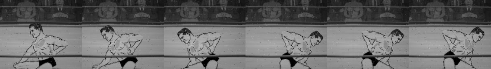

T2.4 · Lou's forearm across the flip: no size change found, no fix made
Result: through the flip the near forearm (the one on the back) draws the same size: box 16.42×49.26 px, scale 0.1403, elbow → wrist 37.95 px on every frame, both facings. Ruled out: the grip art swapping on the flip (it swaps at t .30, in the first half, with the same box); the far forearm being drawn on the back (it is a separate object, 41.9 px tall at scale 0.1193, and never holds the back reach: the waist-contact error is the near wrist's); a two-anchor binding stretch (the art is not bound); depth (near forearm 22.654, torso 22.651, upper arm 22.65401: the forearm is in front of the torso at every frame).
What does change at the flip frame: the art's mirror (flipX true → false on the near forearm, far forearm and both upper arms) and the IK re-solving the elbow onto the back-waist point of the other side. The elbow fold is the same size before and after (2.26 vs 2.25 rad). I tried drawing the forearm over the upper arm for the whole rise (a rig order George already has): the frames before the flip look the same, so I reverted it. I cannot point to what Derek saw from the numbers; Derek: which frame, which arm? The frames around the flip, 2×:

frame
t
near forearm art
box px
scale
flipX
elbow→wrist px
far elbow→wrist px
18
0.24
forearm
16.42×49.26
0.1403
yes
37.95
32.26
19
0.27
forearm
16.42×49.26
0.1403
yes
37.95
32.26
20
0.30
forearm_grip
16.42×49.26
0.1403
yes
37.95
32.26
21
0.32
forearm_grip
16.42×49.26
0.1403
yes
37.95
32.26
24
0.41
forearm_grip
16.42×49.26
0.1403
yes
37.95
32.26
25
0.43
forearm_grip
16.42×49.26
0.1403
yes
37.95
32.26
26
0.46
flipped
forearm_grip
16.42×49.26
0.1403
no
37.95
32.26
27
0.49
flipped
forearm_grip
16.42×49.26
0.1403
no
37.95
32.26
28
0.52
flipped
forearm_grip
16.42×49.26
0.1403
no
37.95
32.26
T2.5 · George: elbow out, not hand low
Misses first (measured, not judged).
1. Nothing reaches “never below the trunks”. The hand's lowest point stays 8–12.5 px below the trunks' lower edge somewhere on the standing route for every candidate (today 10.3). The via point itself is now above the edge (about 24 px above at hw .5, today 8.8 px below), but the hand passes low on the way in and out because the arm and elbow offsets are interpolated in channel space; the arm-first phasing (P1–P3) lowers that: P3 8.3 px, P2 11.4, P1 12.2.
2. The waist-height via cannot be reached with the elbow as asked. With the upper arm swung back .4 / .6 / .8 rad the wrist stays 11.6 / 11.5 / 9.9 px off the via point; the picks that come closest (swing .35 / .5 / .8, elbow −2.0 / −1.8 / −1.1) leave 9.8 / 8.5 / 9.9 px (today's B reaches 8.0 px). The elbow folds behind the upper arm (negative flex, down to −3.0 allowed).
3. Outside the torso ∪ thighs at the depth swap: C1/P1 are 0 px (the hand is over the thigh when the depth swaps: fail closed, the swap would wait), C2/P2 6.7 px, C3/P3 16.1 px; today's B 13.1 px going behind the body and 12.1 px coming out.
Elbow-out here is the existing recoveryArm / recoveryElbow pair (no new field); the only new rig-data field is the optional aroundVia.phase (validated, default off: George and every rig are unchanged until Derek picks). Candidates are runtime patches on the live rig; nothing under src/rig/george has changed.
cand
via (torso image)
recoveryArm / recoveryElbow
standing route: lowest hand point below the trunks' lower edge, px (hw .1–.9; ≤ 0 is above)
rise route
outside torso ∪ thighs at the depth swaps, px
facing right standing
B
u −.25, v .907 (today)
−0.6 / −0.4
10.34
11.67
13.05, 12.14
10.34
C1
u -0.2329, v 0.6077
-0.35 / -2
12.53
6.46
0, 23.77
12.53
C2
u -0.355, v 0.6077
-0.5 / -1.8
12.52
6.63
6.72, 28.05
12.52
C3
u -0.4772, v 0.6077
-0.8 / -1.1
11.73
6.79
16.07, 33.07
11.73
P1
u -0.2329, v 0.6077
-0.35 / -2
12.19
6.46
0, 24.02
12.19
P2
u -0.355, v 0.6077
-0.5 / -1.8
11.35
6.63
6.72, 28.17
11.35
P3
u -0.4772, v 0.6077
-0.8 / -1.1
8.34
6.79
16.07, 33.98
8.34
Facing −1 shown, +1 within 0.1 px. Trunks' lower edge = the last opaque row of George's torso art (the trunks are painted on the torso). The hand's lowest point is the lowest of wrist, grip contact, forearm 3/4 point and the hand's end, along the body axis.